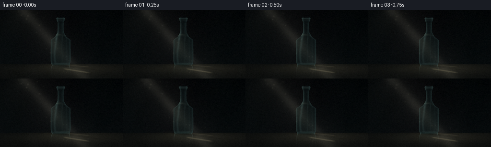
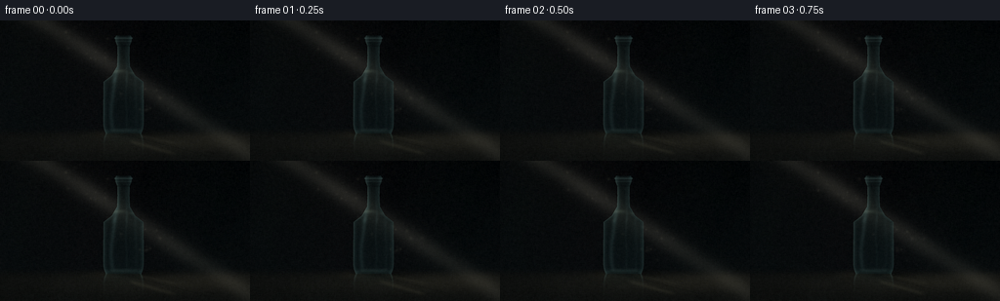
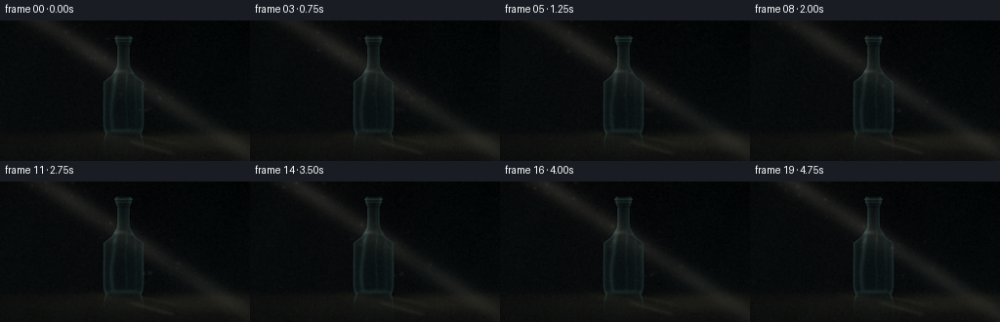
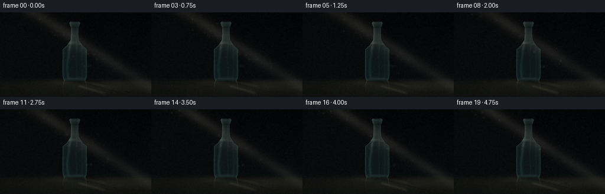
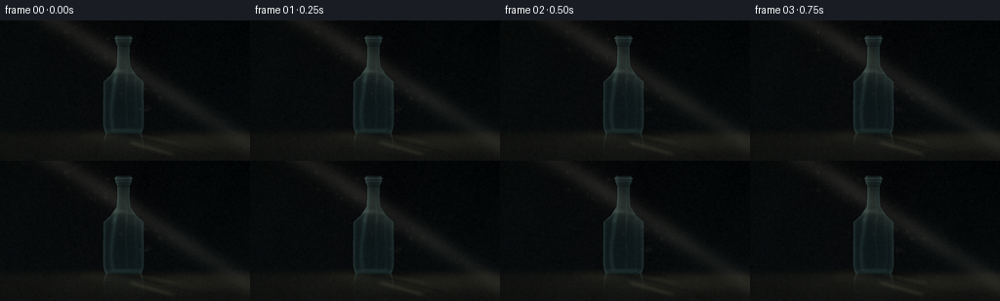
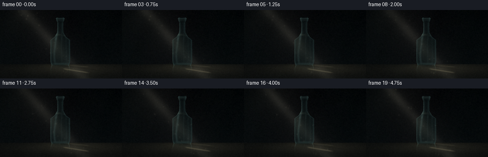
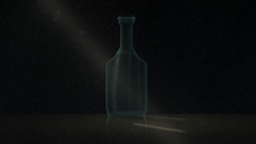
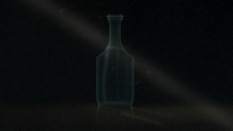
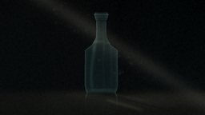

CODING AGENTS AS PIXEL WORLD MODELS
traex/DeepSeek-V4.1-Flash · phygen_043
点击播放 · 原生 RGB 像素
逐轮保存的候选
回放视频、检查图与代码变化。
每份候选均可单独播放。实际图片检查记录在下方工具轨迹中。
候选 01播放与检查图
点击播放 · 原生 RGB 像素


展开代码变化
--- 上一保存版本
+++ 本次保存版本
@@ -0,0 +1,372 @@
+from pathlib import Path
+
+import numpy as np
+from PIL import Image, ImageFilter
+from scipy.ndimage import gaussian_filter
+
+import artifact_io
+
+
+W, H, N, FPS = 256, 144, 20, 4.0
+SS = 4
+SW, SH = W * SS, H * SS
+
+
+def smoothstep(edge0, edge1, value):
+ t = np.clip((value - edge0) / (edge1 - edge0), 0.0, 1.0)
+ return t * t * (3.0 - 2.0 * t)
+
+
+def bottle_halfwidth(y):
+ points_y = np.array([15.5, 18.0, 22.5, 26.0, 36.0, 47.0, 56.5, 63.0, 106.5, 111.5, 116.0])
+ points_w = np.array([7.5, 8.6, 7.8, 6.3, 6.1, 6.5, 12.0, 20.5, 20.8, 20.0, 18.2])
+ return np.interp(y, points_y, points_w, left=0.0, right=0.0)
+
+
+def make_grid():
+ x = (np.arange(SW, dtype=np.float32) + 0.5) / SS
+ y = (np.arange(SH, dtype=np.float32) + 0.5) / SS
+ return np.meshgrid(x, y)
+
+
+def make_background(x, y, rng):
+ # Dark studio wall with a quiet blue-green cast.
+ yn = y / (H - 1)
+ wall = np.empty((SH, SW, 3), dtype=np.float32)
+ wall[..., 0] = 2.1 + 3.2 * yn + 0.4 * np.sin(x / 42.0)
+ wall[..., 1] = 3.2 + 4.6 * yn + 0.6 * np.sin(x / 37.0 + 1.2)
+ wall[..., 2] = 4.2 + 5.0 * yn + 0.5 * np.cos(x / 45.0)
+
+ source_glow = np.exp(-0.5 * (((x - 18.0) / 98.0) ** 2 + ((y + 9.0) / 104.0) ** 2))
+ wall += source_glow[..., None] * np.array([2.4, 2.7, 2.2], dtype=np.float32)
+
+ # Very low-frequency surface unevenness keeps the darkness from looking flat.
+ texture = (
+ 0.50 * np.sin(x * 0.071 + y * 0.019)
+ + 0.34 * np.sin(x * 0.033 - y * 0.047 + 2.1)
+ + 0.18 * np.cos(x * 0.137 + y * 0.061)
+ )
+ wall += texture[..., None] * np.array([0.65, 0.75, 0.72], dtype=np.float32)
+
+ # A shallow, polished table catches the light and a faint vertical reflection.
+ floor_y = 114.0
+ floor_mask = smoothstep(floor_y - 0.45, floor_y + 0.45, y)
+ floor = np.empty_like(wall)
+ depth = np.clip((y - floor_y) / (H - floor_y), 0.0, 1.0)
+ floor[..., 0] = 7.0 + 2.5 * depth
+ floor[..., 1] = 8.4 + 2.6 * depth
+ floor[..., 2] = 8.1 + 2.2 * depth
+ table_sheen = np.exp(-0.5 * (((x - 158.0) / 105.0) ** 2 + ((y - 125.0) / 9.0) ** 2))
+ floor += table_sheen[..., None] * np.array([8.0, 7.2, 5.4], dtype=np.float32)
+ floor += (0.42 * np.sin(x * 0.105 + 0.7) + 0.22 * np.cos(y * 0.21))[..., None] * np.array(
+ [1.0, 1.1, 1.05], dtype=np.float32
+ )
+ image = wall * (1.0 - floor_mask[..., None]) + floor * floor_mask[..., None]
+
+ # Fine, static grain is added here; per-frame grain comes later.
+ soft_noise = gaussian_filter(rng.normal(0.0, 1.0, (SH // 4, SW // 4)).astype(np.float32), 0.8)
+ soft_noise = np.asarray(
+ Image.fromarray(soft_noise, mode="F").resize((SW, SH), Image.Resampling.BICUBIC),
+ dtype=np.float32,
+ )
+ image += soft_noise[..., None] * 0.55
+ return image, floor_mask
+
+
+def beam_distance(x, y, shift):
+ x0, y0 = 33.0 + shift, -18.0
+ dx, dy = 0.665, 0.747
+ norm = (dx * dx + dy * dy) ** 0.5
+ dx, dy = dx / norm, dy / norm
+ along = (x - x0) * dx + (y - y0) * dy
+ distance = -(x - x0) * dy + (y - y0) * dx
+ return along, distance
+
+
+def add_beam(image, x, y, floor_mask, phase):
+ shift = 0.85 * np.sin(phase - 0.55)
+ along, dist = beam_distance(x, y, shift)
+ breath = 1.0 + 0.055 * np.sin(phase * 1.23 + 0.8)
+ width = 7.2 + 0.35 * np.sin(phase * 0.77)
+ core = np.exp(-0.5 * (dist / width) ** 2)
+ halo = np.exp(-0.5 * (dist / (29.0 + 1.4 * np.sin(phase * 0.61))) ** 2)
+ secondary = np.exp(-0.5 * ((dist - 11.0) / 9.0) ** 2)
+
+ start_fade = smoothstep(-10.0, 30.0, along)
+ end_fade = 1.0 - 0.22 * smoothstep(145.0, 205.0, along)
+ streak = 0.88 + 0.12 * np.sin(along * 0.071 + phase * 0.74)
+ strength = start_fade * end_fade * streak * breath
+ air = (core * 16.0 + halo * 5.2 + secondary * 2.2) * strength
+ image += air[..., None] * np.array([1.00, 0.96, 0.82], dtype=np.float32)
+
+ # The shaft lands as a soft, elongated pool on the tabletop.
+ pool = np.exp(
+ -0.5
+ * (
+ ((x - (151.0 + shift)) / 58.0) ** 2
+ + ((y - 121.0) / 8.5) ** 2
+ )
+ )
+ pool *= floor_mask * (0.70 + 0.08 * np.sin(phase * 0.91))
+ image += pool[..., None] * np.array([13.0, 11.4, 7.6], dtype=np.float32)
+ return along, dist
+
+
+def shadow_geometry(x, y):
+ ox, oy = 127.0, 117.2
+ angle = np.deg2rad(7.0)
+ dx, dy = np.cos(angle), np.sin(angle)
+ t = (x - ox) * dx + (y - oy) * dy
+ s = -(x - ox) * dy + (y - oy) * dx
+ hw = np.interp(
+ t,
+ [-5.0, 3.0, 39.0, 50.0, 56.0, 62.0, 76.0, 82.0, 87.0],
+ [0.0, 9.0, 10.2, 9.2, 5.2, 3.7, 3.5, 2.6, 0.0],
+ left=0.0,
+ right=0.0,
+ )
+ mask = smoothstep(hw - 0.7, hw + 0.7, hw - np.abs(s))
+ body = smoothstep(2.0, 10.0, t) * (1.0 - smoothstep(80.0, 87.0, t))
+ return t, s, mask * body
+
+
+def add_shadow_and_caustics(image, x, y, floor_mask, phase):
+ t, s, shadow = shadow_geometry(x, y)
+ flicker = 1.0 + 0.04 * np.sin(phase * 1.1 + 1.7)
+ shadow = shadow * floor_mask * flicker
+ image *= (1.0 - 0.50 * shadow[..., None])
+ image -= shadow[..., None] * np.array([2.2, 1.7, 1.1], dtype=np.float32)
+
+ # Two focused arcs inside the shadow read as light transmitted through glass.
+ window = smoothstep(4.0, 12.0, t) * (1.0 - smoothstep(53.0, 64.0, t))
+ arc1 = np.exp(-0.5 * ((s - (5.3 + 0.035 * t)) / 0.95) ** 2)
+ arc2 = np.exp(-0.5 * ((s + (3.0 + 0.028 * t)) / 0.65) ** 2)
+ caustic = (arc1 * 0.95 + arc2 * 0.48) * window * floor_mask
+ image += caustic[..., None] * np.array([34.0, 31.0, 22.0], dtype=np.float32)
+
+ # Contact shadow and a small pool of bounced light at the bottle foot.
+ contact = np.exp(-0.5 * (((x - 126.0) / 23.0) ** 2 + ((y - 116.5) / 2.4) ** 2))
+ image *= 1.0 - 0.40 * contact[..., None]
+ bounce = np.exp(-0.5 * (((x - 107.0) / 13.0) ** 2 + ((y - 117.0) / 3.0) ** 2))
+ image += bounce[..., None] * np.array([8.5, 8.0, 6.0], dtype=np.float32)
+
+
+def add_bottle_reflection(image, x, y, floor_mask, phase):
+ base = 115.7
+ source_y = 2.0 * base - y
+ hw = bottle_halfwidth(source_y)
+ inside = (source_y >= 15.5) & (source_y <= 116.0) & (np.abs(x - 126.5) <= hw)
+ fade = np.exp(-np.maximum(y - base, 0.0) / 6.5) * floor_mask
+ ripple = 0.90 + 0.10 * np.sin(y * 1.75 + phase * 0.5)
+ reflection = inside.astype(np.float32) * fade * ripple
+ image += reflection[..., None] * np.array([3.8, 7.8, 7.2], dtype=np.float32)
+
+ edge = np.exp(-0.5 * ((np.abs(x - 126.5) - (hw - 1.0)) / 0.55) ** 2)
+ edge *= inside * fade
+ image += edge[..., None] * np.array([18.0, 27.0, 25.0], dtype=np.float32)
+
+
+def bottle_layers(x, y, along, dist, phase):
+ cx = 126.5
+ hw = bottle_halfwidth(y)
+ dx = x - cx
+ inside = (y >= 15.5) & (y <= 116.0) & (np.abs(dx) <= hw)
+ edge_dist = hw - np.abs(dx)
+ vertical = np.clip((y - 16.0) / 100.0, 0.0, 1.0)
+ shoulder = smoothstep(44.0, 59.0, y) * (1.0 - smoothstep(59.0, 66.0, y))
+ body = smoothstep(56.0, 64.0, y) * (1.0 - smoothstep(108.0, 116.0, y))
+ neck = (y >= 22.0) & (y <= 50.0)
+
+ beam_light = np.exp(-0.5 * (dist / 17.0) ** 2)
+ beam_light *= smoothstep(18.0, 55.0, along) * (1.0 - 0.35 * smoothstep(120.0, 165.0, along))
+ left_bias = 0.58 + 0.42 * smoothstep(cx + 12.0, cx - 12.0, x)
+
+ fill = np.zeros_like(x[..., None].repeat(3, axis=2))
+ fill += np.array([5.2, 11.8, 12.6], dtype=np.float32)
+ fill += (6.5 + 9.0 * vertical)[..., None] * np.array([0.34, 0.58, 0.62], dtype=np.float32)
+ fill += (beam_light * left_bias * 27.0)[..., None] * np.array([0.72, 0.67, 0.49], dtype=np.float32)
+
+ alpha = inside.astype(np.float32) * (0.50 + 0.10 * beam_light)
+ alpha *= 0.82 + 0.18 * smoothstep(0.0, 4.0, edge_dist)
+
+ # Thick glass walls and soft interior edge occlusion.
+ wall_band = np.exp(-0.5 * ((edge_dist - 1.55) / 1.25) ** 2)
+ wall_band *= inside
+ fill *= 1.0 - 0.34 * wall_band[..., None]
+ fill += wall_band[..., None] * np.array([12.0, 19.0, 19.0], dtype=np.float32)
+ alpha = np.clip(alpha + 0.14 * wall_band, 0.0, 0.84)
+
+ # Slim, cyan-white reflections bend slightly through the bottle profile.
+ streak_a = np.exp(
+ -0.5
+ * (
+ (
+ x
+ - (
+ cx
+ - 11.0
+ + 1.7 * np.sin((y - 43.0) / 11.0)
+ + 4.5 * (1.0 - smoothstep(44.0, 64.0, y))
+ )
+ )
+ / 1.55
+ )
+ ** 2
+ )
+ streak_b = np.exp(-0.5 * ((x - (cx + 2.8 + 0.55 * np.sin(y / 7.0))) / 0.82) ** 2)
+ streak_c = np.exp(-0.5 * ((x - (cx + 12.6 - 0.45 * np.sin(y / 8.5))) / 1.15) ** 2)
+ streak_fade = (0.42 + 0.58 * smoothstep(21.0, 36.0, y)) * (1.0 - 0.65 * smoothstep(108.0, 116.0, y))
+ streak_a *= inside * (0.54 * body + 0.75 * shoulder + 0.30 * neck) * streak_fade
+ streak_b *= inside * (0.36 * body + 0.58 * shoulder + 0.24 * neck) * streak_fade
+ streak_c *= inside * (0.34 * body + 0.24 * shoulder) * streak_fade
+ shine = streak_a * 60.0 + streak_b * 31.0 + streak_c * 24.0
+ shine *= 0.86 + 0.14 * np.sin(phase * 0.9 + y * 0.04)
+ fill += shine[..., None] * np.array([0.68, 1.00, 0.98], dtype=np.float32)
+
+ # Crisp rims, a double lip, and the thick glass foot.
+ rim = np.exp(-0.5 * (edge_dist / 0.70) ** 2) * inside
+ left_rim = rim * smoothstep(cx + 4.0, cx - 4.0, x)
+ right_rim = rim * smoothstep(cx - 4.0, cx + 4.0, x)
+ fill += left_rim[..., None] * np.array([36.0, 49.0, 45.0], dtype=np.float32)
+ fill += right_rim[..., None] * np.array([20.0, 31.0, 30.0], dtype=np.float32)
+
+ lip = np.exp(-0.5 * ((y - 18.2) / 0.82) ** 2)
+ lip += 0.55 * np.exp(-0.5 * ((y - 21.2) / 0.62) ** 2)
+ lip *= (np.abs(dx) <= bottle_halfwidth(y) + 1.0)
+ fill += lip[..., None] * np.array([31.0, 42.0, 40.0], dtype=np.float32)
+ alpha = np.maximum(alpha, np.clip(lip * 0.56, 0.0, 0.72))
+
+ foot = np.exp(-0.5 * ((y - 112.7) / 1.25) ** 2) * body
+ foot *= smoothstep(3.0, 8.0, edge_dist)
+ fill += foot[..., None] * np.array([24.0, 33.0, 31.0], dtype=np.float32)
+
+ base_curve = np.exp(-0.5 * (((x - cx) / 16.5) ** 2 + ((y - 113.7) / 1.3) ** 2))
+ fill += base_curve[..., None] * np.array([13.0, 21.0, 20.0], dtype=np.float32)
+
+ # Tiny highlights where the shoulder catches the strongest part of the ray.
+ shoulder_glint = np.exp(-0.5 * (((x - (cx - 8.0)) / 7.0) ** 2 + ((y - 52.0) / 1.35) ** 2))
+ shoulder_glint += 0.42 * np.exp(-0.5 * (((x - (cx + 8.5)) / 3.3) ** 2 + ((y - 54.0) / 1.0) ** 2))
+ fill += (shoulder_glint * (0.55 + 0.45 * beam_light))[..., None] * np.array(
+ [38.0, 44.0, 36.0], dtype=np.float32
+ )
+
+ # A dark neck seam and transparent center keep the glass from reading as metal.
+ neck_ring = np.exp(-0.5 * ((y - 26.0) / 0.48) ** 2) * (np.abs(dx) < 8.4)
+ fill *= 1.0 - 0.32 * neck_ring[..., None]
+ center_shadow = np.exp(-0.5 * ((dx / 7.5) ** 2 + ((y - 82.0) / 31.0) ** 2))
+ fill *= 1.0 - 0.10 * center_shadow[..., None]
+
+ return fill, np.clip(alpha, 0.0, 0.86), inside.astype(np.float32)
+
+
+def composite_bottle(image, x, y, along, dist, phase):
+ fill, alpha, _ = bottle_layers(x, y, along, dist, phase)
+ alpha3 = alpha[..., None]
+ return image * (1.0 - alpha3) + fill * alpha3
+
+
+def add_dust(image, x, y, phase):
+ rng = np.random.default_rng(74391)
+ count = 34
+ x0, y0 = 33.0, -18.0
+ dx, dy = 0.665, 0.747
+ norm = (dx * dx + dy * dy) ** 0.5
+ dx, dy = dx / norm, dy / norm
+ nx, ny = -dy, dx
+
+ for i in range(count):
+ along = rng.uniform(10.0, 205.0)
+ normal = rng.uniform(-23.0, 23.0)
+ speed = rng.uniform(0.9, 2.5)
+ sway = rng.uniform(0.7, 2.4)
+ freq = rng.uniform(0.45, 1.25)
+ tphase = rng.uniform(0.0, 2.0 * np.pi)
+ px = x0 + dx * (along + speed * phase) + nx * (normal + sway * np.sin(freq * phase + tphase))
+ py = y0 + dy * (along + speed * phase) + ny * (normal + sway * np.sin(freq * phase + tphase))
+ if px < -3 or px > W + 3 or py < -3 or py > H + 3:
+ continue
+ sigma = rng.uniform(0.45, 1.05)
+ amp = rng.uniform(5.0, 14.0) * (0.72 + 0.28 * np.sin(phase * rng.uniform(0.7, 1.5) + tphase))
+ radius = int(np.ceil(4.0 * sigma * SS))
+ xc, yc = int(round(px * SS)), int(round(py * SS))
+ x1, x2 = max(0, xc - radius), min(SW, xc + radius + 1)
+ y1, y2 = max(0, yc - radius), min(SH, yc + radius + 1)
+ if x1 >= x2 or y1 >= y2:
+ continue
+ patch_x = x[y1:y2, x1:x2]
+ patch_y = y[y1:y2, x1:x2]
+ spot = np.exp(-0.5 * (((patch_x - px) / sigma) ** 2 + ((patch_y - py) / sigma) ** 2))
+ halo = np.exp(-0.5 * (((patch_x - px) / (sigma * 2.7)) ** 2 + ((patch_y - py) / (sigma * 2.7)) ** 2))
+ image[y1:y2, x1:x2] += (spot * amp + halo * amp * 0.12)[..., None] * np.array(
+ [1.00, 0.94, 0.76], dtype=np.float32
+ )
+
+
+def postprocess(rgb, frame_index):
+ image = np.clip(rgb, 0.0, 255.0).astype(np.uint8)
+ pil = Image.fromarray(image)
+
+ array = np.asarray(pil, dtype=np.float32) / 255.0
+ luminance = array[..., 0] * 0.2126 + array[..., 1] * 0.7152 + array[..., 2] * 0.0722
+ bright = np.clip((luminance - 0.27) / 0.73, 0.0, 1.0)
+ glow = np.asarray(
+ Image.fromarray((bright * 255.0).astype(np.uint8)).filter(ImageFilter.GaussianBlur(5.2)),
+ dtype=np.float32,
+ ) / 255.0
+ glow_color = np.stack(
+ [
+ gaussian_filter(glow, 0.7),
+ gaussian_filter(glow, 0.9),
+ gaussian_filter(glow, 1.1),
+ ],
+ axis=-1,
+ )
+ array = 1.0 - (1.0 - array) * (1.0 - 0.22 * glow_color * np.array([1.0, 0.94, 0.80], dtype=np.float32))
+
+ yy, xx = np.mgrid[0:H, 0:W]
+ radius = np.sqrt(((xx - W * 0.48) / (W * 0.68)) ** 2 + ((yy - H * 0.48) / (H * 0.75)) ** 2)
+ vignette = np.clip(1.08 - 0.22 * radius**2, 0.72, 1.0)
+ array *= vignette[..., None]
+
+ rng = np.random.default_rng(90210 + frame_index)
+ grain = rng.normal(0.0, 1.0, (H, W, 1)).astype(np.float32)
+ grain = gaussian_filter(grain, sigma=(0.55, 0.55, 0.0))
+ array += grain * 0.0065
+
+ # Gentle lifted-black curve and restrained highlight rolloff.
+ array = np.maximum(array, 0.0)
+ array = 1.0 - np.exp(-array * 1.16)
+ array = np.power(array, 0.94)
+ return np.clip(array * 255.0 + 0.5, 0.0, 255.0).astype(np.uint8)
+
+
+def render_frame(frame_index, x, y, base, floor_mask):
+ phase = 2.0 * np.pi * frame_index / N
+ image = base.copy()
+ along, dist = add_beam(image, x, y, floor_mask, phase)
+ add_shadow_and_caustics(image, x, y, floor_mask, phase)
+ add_bottle_reflection(image, x, y, floor_mask, phase)
+ image = composite_bottle(image, x, y, along, dist, phase)
+ add_dust(image, x, y, phase)
+
+ small = np.asarray(
+ Image.fromarray(np.clip(image, 0.0, 255.0).astype(np.uint8)).resize(
+ (W, H), Image.Resampling.LANCZOS
+ ),
+ dtype=np.float32,
+ )
+ return postprocess(small, frame_index)
+
+
+def main():
+ case_dir = Path(__file__).resolve().parent
+ rng = np.random.default_rng(4387)
+ x, y = make_grid()
+ base, floor_mask = make_background(x, y, rng)
+ frames = [render_frame(i, x, y, base, floor_mask) for i in range(N)]
+ artifact_io.save(np.stack(frames, axis=0), case_dir)
+ print(f"Saved {len(frames)} frames to {case_dir}")
+
+
+if __name__ == "__main__":
+ main()
候选 02播放与检查图
点击播放 · 原生 RGB 像素


展开代码变化
--- 上一保存版本
+++ 本次保存版本
@@ -50,7 +50,7 @@
# A shallow, polished table catches the light and a faint vertical reflection.
floor_y = 114.0
- floor_mask = smoothstep(floor_y - 0.45, floor_y + 0.45, y)
+ floor_mask = smoothstep(floor_y - 5.5, floor_y + 5.5, y)
floor = np.empty_like(wall)
depth = np.clip((y - floor_y) / (H - floor_y), 0.0, 1.0)
floor[..., 0] = 7.0 + 2.5 * depth
@@ -74,8 +74,8 @@
def beam_distance(x, y, shift):
- x0, y0 = 33.0 + shift, -18.0
- dx, dy = 0.665, 0.747
+ x0, y0 = 7.0 + shift, -23.0
+ dx, dy = 0.842, 0.540
norm = (dx * dx + dy * dy) ** 0.5
dx, dy = dx / norm, dy / norm
along = (x - x0) * dx + (y - y0) * dy
@@ -87,46 +87,46 @@
shift = 0.85 * np.sin(phase - 0.55)
along, dist = beam_distance(x, y, shift)
breath = 1.0 + 0.055 * np.sin(phase * 1.23 + 0.8)
- width = 7.2 + 0.35 * np.sin(phase * 0.77)
+ width = 6.3 + 0.28 * np.sin(phase * 0.77)
core = np.exp(-0.5 * (dist / width) ** 2)
- halo = np.exp(-0.5 * (dist / (29.0 + 1.4 * np.sin(phase * 0.61))) ** 2)
- secondary = np.exp(-0.5 * ((dist - 11.0) / 9.0) ** 2)
+ halo = np.exp(-0.5 * (dist / (17.0 + 0.8 * np.sin(phase * 0.61))) ** 2)
+ secondary = np.exp(-0.5 * ((dist - 9.0) / 5.5) ** 2)
start_fade = smoothstep(-10.0, 30.0, along)
end_fade = 1.0 - 0.22 * smoothstep(145.0, 205.0, along)
streak = 0.88 + 0.12 * np.sin(along * 0.071 + phase * 0.74)
strength = start_fade * end_fade * streak * breath
- air = (core * 16.0 + halo * 5.2 + secondary * 2.2) * strength
+ air = (core * 20.0 + halo * 2.4 + secondary * 0.9) * strength
image += air[..., None] * np.array([1.00, 0.96, 0.82], dtype=np.float32)
# The shaft lands as a soft, elongated pool on the tabletop.
pool = np.exp(
-0.5
* (
- ((x - (151.0 + shift)) / 58.0) ** 2
- + ((y - 121.0) / 8.5) ** 2
+ ((x - (205.0 + shift)) / 45.0) ** 2
+ + ((y - 125.0) / 7.0) ** 2
)
)
pool *= floor_mask * (0.70 + 0.08 * np.sin(phase * 0.91))
- image += pool[..., None] * np.array([13.0, 11.4, 7.6], dtype=np.float32)
+ image += pool[..., None] * np.array([8.0, 7.0, 4.8], dtype=np.float32)
return along, dist
def shadow_geometry(x, y):
ox, oy = 127.0, 117.2
- angle = np.deg2rad(7.0)
+ angle = np.deg2rad(14.0)
dx, dy = np.cos(angle), np.sin(angle)
t = (x - ox) * dx + (y - oy) * dy
s = -(x - ox) * dy + (y - oy) * dx
hw = np.interp(
t,
- [-5.0, 3.0, 39.0, 50.0, 56.0, 62.0, 76.0, 82.0, 87.0],
- [0.0, 9.0, 10.2, 9.2, 5.2, 3.7, 3.5, 2.6, 0.0],
+ [-5.0, 3.0, 36.0, 47.0, 53.0, 59.0, 72.0, 78.0, 83.0],
+ [0.0, 8.2, 9.6, 8.7, 5.0, 3.6, 3.3, 2.4, 0.0],
left=0.0,
right=0.0,
)
mask = smoothstep(hw - 0.7, hw + 0.7, hw - np.abs(s))
- body = smoothstep(2.0, 10.0, t) * (1.0 - smoothstep(80.0, 87.0, t))
+ body = smoothstep(2.0, 10.0, t) * (1.0 - smoothstep(76.0, 83.0, t))
return t, s, mask * body
@@ -134,15 +134,15 @@
t, s, shadow = shadow_geometry(x, y)
flicker = 1.0 + 0.04 * np.sin(phase * 1.1 + 1.7)
shadow = shadow * floor_mask * flicker
- image *= (1.0 - 0.50 * shadow[..., None])
+ image *= (1.0 - 0.43 * shadow[..., None])
image -= shadow[..., None] * np.array([2.2, 1.7, 1.1], dtype=np.float32)
# Two focused arcs inside the shadow read as light transmitted through glass.
- window = smoothstep(4.0, 12.0, t) * (1.0 - smoothstep(53.0, 64.0, t))
- arc1 = np.exp(-0.5 * ((s - (5.3 + 0.035 * t)) / 0.95) ** 2)
- arc2 = np.exp(-0.5 * ((s + (3.0 + 0.028 * t)) / 0.65) ** 2)
- caustic = (arc1 * 0.95 + arc2 * 0.48) * window * floor_mask
- image += caustic[..., None] * np.array([34.0, 31.0, 22.0], dtype=np.float32)
+ window = smoothstep(4.0, 12.0, t) * (1.0 - smoothstep(48.0, 58.0, t))
+ arc1 = np.exp(-0.5 * ((s - (4.9 + 0.030 * t)) / 1.35) ** 2)
+ arc2 = np.exp(-0.5 * ((s + (2.8 + 0.025 * t)) / 1.05) ** 2)
+ caustic = (arc1 * 0.72 + arc2 * 0.38) * window * floor_mask
+ image += caustic[..., None] * np.array([13.0, 12.5, 9.0], dtype=np.float32)
# Contact shadow and a small pool of bounced light at the bottle foot.
contact = np.exp(-0.5 * (((x - 126.0) / 23.0) ** 2 + ((y - 116.5) / 2.4) ** 2))
@@ -177,7 +177,7 @@
body = smoothstep(56.0, 64.0, y) * (1.0 - smoothstep(108.0, 116.0, y))
neck = (y >= 22.0) & (y <= 50.0)
- beam_light = np.exp(-0.5 * (dist / 17.0) ** 2)
+ beam_light = np.exp(-0.5 * (dist / 14.0) ** 2)
beam_light *= smoothstep(18.0, 55.0, along) * (1.0 - 0.35 * smoothstep(120.0, 165.0, along))
left_bias = 0.58 + 0.42 * smoothstep(cx + 12.0, cx - 12.0, x)
@@ -268,8 +268,8 @@
def add_dust(image, x, y, phase):
rng = np.random.default_rng(74391)
count = 34
- x0, y0 = 33.0, -18.0
- dx, dy = 0.665, 0.747
+ x0, y0 = 7.0, -23.0
+ dx, dy = 0.842, 0.540
norm = (dx * dx + dy * dy) ** 0.5
dx, dy = dx / norm, dy / norm
nx, ny = -dy, dx
候选 03播放与检查图
点击播放 · 原生 RGB 像素

展开代码变化
--- 上一保存版本
+++ 本次保存版本
@@ -53,9 +53,9 @@
floor_mask = smoothstep(floor_y - 5.5, floor_y + 5.5, y)
floor = np.empty_like(wall)
depth = np.clip((y - floor_y) / (H - floor_y), 0.0, 1.0)
- floor[..., 0] = 7.0 + 2.5 * depth
- floor[..., 1] = 8.4 + 2.6 * depth
- floor[..., 2] = 8.1 + 2.2 * depth
+ floor[..., 0] = 9.0 + 2.8 * depth
+ floor[..., 1] = 10.5 + 3.0 * depth
+ floor[..., 2] = 9.8 + 2.5 * depth
table_sheen = np.exp(-0.5 * (((x - 158.0) / 105.0) ** 2 + ((y - 125.0) / 9.0) ** 2))
floor += table_sheen[..., None] * np.array([8.0, 7.2, 5.4], dtype=np.float32)
floor += (0.42 * np.sin(x * 0.105 + 0.7) + 0.22 * np.cos(y * 0.21))[..., None] * np.array(
@@ -74,7 +74,7 @@
def beam_distance(x, y, shift):
- x0, y0 = 7.0 + shift, -23.0
+ x0, y0 = 22.0 + shift, -23.0
dx, dy = 0.842, 0.540
norm = (dx * dx + dy * dy) ** 0.5
dx, dy = dx / norm, dy / norm
@@ -121,11 +121,11 @@
hw = np.interp(
t,
[-5.0, 3.0, 36.0, 47.0, 53.0, 59.0, 72.0, 78.0, 83.0],
- [0.0, 8.2, 9.6, 8.7, 5.0, 3.6, 3.3, 2.4, 0.0],
+ [0.0, 11.0, 12.5, 11.2, 6.4, 4.6, 4.2, 3.0, 0.0],
left=0.0,
right=0.0,
)
- mask = smoothstep(hw - 0.7, hw + 0.7, hw - np.abs(s))
+ mask = smoothstep(hw - 1.1, hw + 1.1, hw - np.abs(s))
body = smoothstep(2.0, 10.0, t) * (1.0 - smoothstep(76.0, 83.0, t))
return t, s, mask * body
@@ -134,21 +134,21 @@
t, s, shadow = shadow_geometry(x, y)
flicker = 1.0 + 0.04 * np.sin(phase * 1.1 + 1.7)
shadow = shadow * floor_mask * flicker
- image *= (1.0 - 0.43 * shadow[..., None])
- image -= shadow[..., None] * np.array([2.2, 1.7, 1.1], dtype=np.float32)
+ image *= (1.0 - 0.53 * shadow[..., None])
+ image -= shadow[..., None] * np.array([2.0, 1.5, 0.9], dtype=np.float32)
# Two focused arcs inside the shadow read as light transmitted through glass.
window = smoothstep(4.0, 12.0, t) * (1.0 - smoothstep(48.0, 58.0, t))
- arc1 = np.exp(-0.5 * ((s - (4.9 + 0.030 * t)) / 1.35) ** 2)
- arc2 = np.exp(-0.5 * ((s + (2.8 + 0.025 * t)) / 1.05) ** 2)
- caustic = (arc1 * 0.72 + arc2 * 0.38) * window * floor_mask
- image += caustic[..., None] * np.array([13.0, 12.5, 9.0], dtype=np.float32)
+ arc1 = np.exp(-0.5 * ((s - (6.0 + 0.030 * t)) / 1.55) ** 2)
+ arc2 = np.exp(-0.5 * ((s + (3.2 + 0.025 * t)) / 1.20) ** 2)
+ caustic = (arc1 * 0.78 + arc2 * 0.42) * window * floor_mask
+ image += caustic[..., None] * np.array([18.0, 17.0, 12.0], dtype=np.float32)
# Contact shadow and a small pool of bounced light at the bottle foot.
- contact = np.exp(-0.5 * (((x - 126.0) / 23.0) ** 2 + ((y - 116.5) / 2.4) ** 2))
- image *= 1.0 - 0.40 * contact[..., None]
- bounce = np.exp(-0.5 * (((x - 107.0) / 13.0) ** 2 + ((y - 117.0) / 3.0) ** 2))
- image += bounce[..., None] * np.array([8.5, 8.0, 6.0], dtype=np.float32)
+ contact = np.exp(-0.5 * (((x - 128.0) / 25.0) ** 2 + ((y - 117.0) / 2.8) ** 2))
+ image *= 1.0 - 0.46 * contact[..., None]
+ bounce = np.exp(-0.5 * (((x - 104.0) / 15.0) ** 2 + ((y - 118.0) / 3.5) ** 2))
+ image += bounce[..., None] * np.array([11.0, 10.2, 7.4], dtype=np.float32)
def add_bottle_reflection(image, x, y, floor_mask, phase):
@@ -182,11 +182,15 @@
left_bias = 0.58 + 0.42 * smoothstep(cx + 12.0, cx - 12.0, x)
fill = np.zeros_like(x[..., None].repeat(3, axis=2))
- fill += np.array([5.2, 11.8, 12.6], dtype=np.float32)
- fill += (6.5 + 9.0 * vertical)[..., None] * np.array([0.34, 0.58, 0.62], dtype=np.float32)
- fill += (beam_light * left_bias * 27.0)[..., None] * np.array([0.72, 0.67, 0.49], dtype=np.float32)
-
- alpha = inside.astype(np.float32) * (0.50 + 0.10 * beam_light)
+ fill += np.array([9.0, 19.0, 20.0], dtype=np.float32)
+ fill += (9.0 + 11.0 * vertical)[..., None] * np.array([0.40, 0.64, 0.68], dtype=np.float32)
+ fill += (beam_light * left_bias * 40.0)[..., None] * np.array([0.72, 0.67, 0.49], dtype=np.float32)
+
+ transmission = np.exp(-0.5 * (dist / 8.5) ** 2)
+ transmission *= inside * (0.34 + 0.66 * body) * smoothstep(18.0, 54.0, along)
+ fill += (transmission * 23.0)[..., None] * np.array([0.78, 0.92, 0.82], dtype=np.float32)
+
+ alpha = inside.astype(np.float32) * (0.54 + 0.10 * beam_light)
alpha *= 0.82 + 0.18 * smoothstep(0.0, 4.0, edge_dist)
# Thick glass walls and soft interior edge occlusion.
候选 04播放与检查图
候选 05播放与检查图
点击播放 · 原生 RGB 像素


展开代码变化
--- 上一保存版本
+++ 本次保存版本
@@ -19,7 +19,7 @@
def bottle_halfwidth(y):
points_y = np.array([15.5, 18.0, 22.5, 26.0, 36.0, 47.0, 56.5, 63.0, 106.5, 111.5, 116.0])
- points_w = np.array([7.5, 8.6, 7.8, 6.3, 6.1, 6.5, 12.0, 20.5, 20.8, 20.0, 18.2])
+ points_w = np.array([7.5, 8.6, 7.8, 6.3, 6.1, 6.8, 13.2, 20.5, 20.8, 20.0, 18.2])
return np.interp(y, points_y, points_w, left=0.0, right=0.0)
@@ -89,14 +89,14 @@
breath = 1.0 + 0.055 * np.sin(phase * 1.23 + 0.8)
width = 6.3 + 0.28 * np.sin(phase * 0.77)
core = np.exp(-0.5 * (dist / width) ** 2)
- halo = np.exp(-0.5 * (dist / (17.0 + 0.8 * np.sin(phase * 0.61))) ** 2)
+ halo = np.exp(-0.5 * (dist / (15.0 + 0.7 * np.sin(phase * 0.61))) ** 2)
secondary = np.exp(-0.5 * ((dist - 9.0) / 5.5) ** 2)
start_fade = smoothstep(-10.0, 30.0, along)
end_fade = 1.0 - 0.22 * smoothstep(145.0, 205.0, along)
streak = 0.88 + 0.12 * np.sin(along * 0.071 + phase * 0.74)
strength = start_fade * end_fade * streak * breath
- air = (core * 20.0 + halo * 2.4 + secondary * 0.9) * strength
+ air = (core * 18.0 + halo * 2.0 + secondary * 0.8) * strength
image += air[..., None] * np.array([1.00, 0.96, 0.82], dtype=np.float32)
# The shaft lands as a soft, elongated pool on the tabletop.
@@ -142,7 +142,11 @@
arc1 = np.exp(-0.5 * ((s - (6.0 + 0.030 * t)) / 1.55) ** 2)
arc2 = np.exp(-0.5 * ((s + (3.2 + 0.025 * t)) / 1.20) ** 2)
caustic = (arc1 * 0.78 + arc2 * 0.42) * window * floor_mask
- image += caustic[..., None] * np.array([18.0, 17.0, 12.0], dtype=np.float32)
+ caustic_shift = 0.25 * np.sin(phase * 0.82 + 0.4)
+ image += caustic[..., None] * np.array(
+ [18.0 + caustic_shift, 17.0 + caustic_shift, 12.0 + caustic_shift * 0.8],
+ dtype=np.float32,
+ )
# Contact shadow and a small pool of bounced light at the bottle foot.
contact = np.exp(-0.5 * (((x - 128.0) / 25.0) ** 2 + ((y - 117.0) / 2.8) ** 2))
@@ -182,13 +186,13 @@
left_bias = 0.58 + 0.42 * smoothstep(cx + 12.0, cx - 12.0, x)
fill = np.zeros_like(x[..., None].repeat(3, axis=2))
- fill += np.array([9.0, 19.0, 20.0], dtype=np.float32)
+ fill += np.array([8.2, 18.0, 19.0], dtype=np.float32)
fill += (9.0 + 11.0 * vertical)[..., None] * np.array([0.40, 0.64, 0.68], dtype=np.float32)
fill += (beam_light * left_bias * 40.0)[..., None] * np.array([0.72, 0.67, 0.49], dtype=np.float32)
- transmission = np.exp(-0.5 * (dist / 8.5) ** 2)
+ transmission = np.exp(-0.5 * (dist / 7.2) ** 2)
transmission *= inside * (0.34 + 0.66 * body) * smoothstep(18.0, 54.0, along)
- fill += (transmission * 23.0)[..., None] * np.array([0.78, 0.92, 0.82], dtype=np.float32)
+ fill += (transmission * 20.0)[..., None] * np.array([0.78, 0.92, 0.82], dtype=np.float32)
alpha = inside.astype(np.float32) * (0.54 + 0.10 * beam_light)
alpha *= 0.82 + 0.18 * smoothstep(0.0, 4.0, edge_dist)
@@ -248,7 +252,7 @@
fill += base_curve[..., None] * np.array([13.0, 21.0, 20.0], dtype=np.float32)
# Tiny highlights where the shoulder catches the strongest part of the ray.
- shoulder_glint = np.exp(-0.5 * (((x - (cx - 8.0)) / 7.0) ** 2 + ((y - 52.0) / 1.35) ** 2))
+ shoulder_glint = np.exp(-0.5 * (((x - (cx - 8.0)) / 7.5) ** 2 + ((y - 52.0) / 1.55) ** 2))
shoulder_glint += 0.42 * np.exp(-0.5 * (((x - (cx + 8.5)) / 3.3) ** 2 + ((y - 54.0) / 1.0) ** 2))
fill += (shoulder_glint * (0.55 + 0.45 * beam_light))[..., None] * np.array(
[38.0, 44.0, 36.0], dtype=np.float32
可观测工具轨迹
实际执行的命令与返回图片。
命令 1exit 0
/bin/bash -c "pwd && rg --files -g 'prompt.txt' -g 'GENERATION_RULES.md' -g 'task_spec.json' -g '"'!**/.git/**'"'"
命令 2exit 0
/bin/bash -c "find . -maxdepth 2 -type f -printf '%p %s bytes\\n' | sort | head -200"
命令 3exit 0
/bin/bash -c 'cat prompt.txt'
命令 4exit 0
/bin/bash -c 'cat GENERATION_RULES.md'
命令 5exit 0
/bin/bash -c 'cat task_spec.json'
命令 6exit 0
/bin/bash -c "sed -n '1,240p' artifact_io.py"
命令 7exit 0
/bin/bash -c "python - <<'PY'
mods=['numpy','PIL','scipy','cv2','matplotlib','skimage']
for m in mods:
try:
mod=__import__(m)
print(m, getattr(mod,'__version__','ok'))
except Exception as e:
print(m, 'missing', e)
PY"命令 8exit 0
/bin/bash -c 'python generate.py'
命令 9exit 0
/bin/bash -c 'python generate.py'
命令 10exit 0
/bin/bash -c 'python generate.py'
命令 11exit 0
/bin/bash -c 'python generate.py'
命令 12exit 0
/bin/bash -c "python - <<'PY'
from pathlib import Path
import json, numpy as np
from PIL import Image
p=Path('.')
spec=json.loads((p/'task_spec.json').read_text())
z=np.load(p/'pixels.npz')
frames=sorted((p/'frames').glob('*.png'))
print('spec', spec)
print('npz keys', z.files, 'shape', z['pixels'].shape, 'dtype', z['pixels'].dtype)
print('frame count', len(frames), 'sizes', sorted({Image.open(f).size for f in frames}))
print('index bytes', (p/'index.html').stat().st_size)
print('inspection', Image.open(p/'inspection.png').size)
PY"命令 13exit 0
/bin/bash -c "python -m py_compile generate.py artifact_io.py && du -sh . && find . -maxdepth 2 -type f -printf '%p %s\\n' | sort"
视觉工具实际返回图片 1

视觉工具实际返回图片 2

视觉工具实际返回图片 3

视觉工具实际返回图片 4

视觉工具实际返回图片 5

保存候选 5 份；完成命令 13 次；可验证图片返回 5 张。原始 API 响应与完整日志保留在本地。